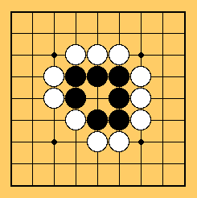
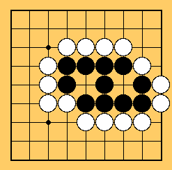

O paraíso das pretas de novo - as brancas não irão responder. Entretanto, fique atento aos movimentos ilegais.
Como você deve ter percebido no último exemplo, mesmo grupos com muitas pedras podem ser mortos uma vez que estejam cercados.
Por exemplo, na figura abaixo, as pretas estão completamente cercadas - não há saída - só esperar para serem mortas pelo movimento das brancas no centro.
Mas e no caso abaixo?
Embora as pretas estejam cercadas, as brancas não podem capturá-las. Há ainda 2 lugares para matar o grupo preto - eles estão ambos cercados por pedras pretas onde as brancas não podem jogar.
Portanto, uma vez que você faça 2 espaços separados, ou 2 olhos, suas pedras nunca serão capturadas.
Tal grupo de pedras é considerado vivo.
Paraíso das pretas novamente.
Você consegue capturá-las?
Aposto que não! Elas estão vivas pois cada grupo tem 2 olhos.
 Próximo
Próximo
 Conteúdo
Conteúdo